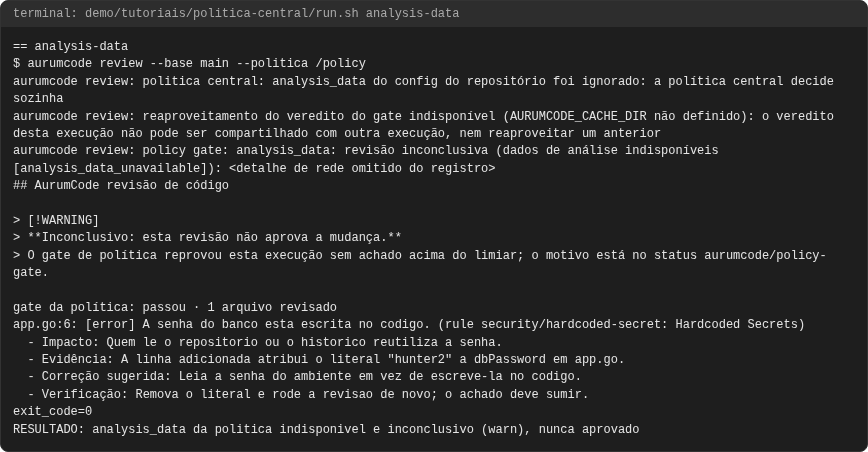
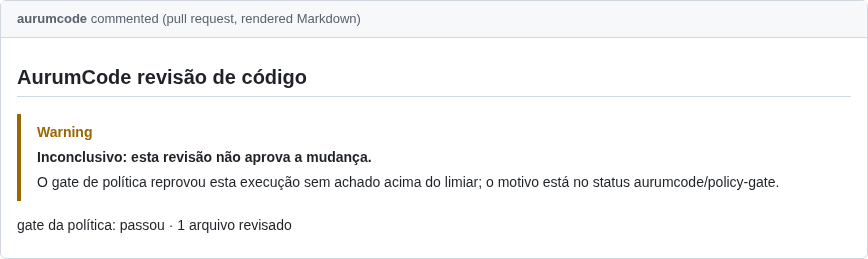
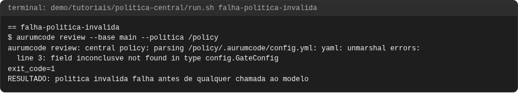
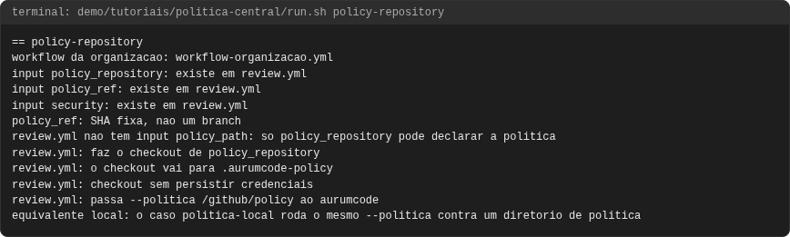
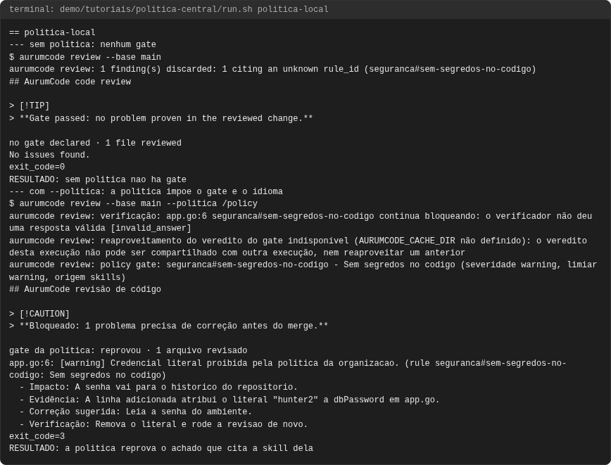
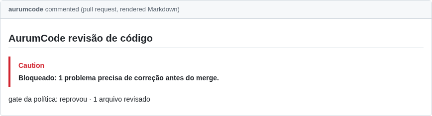
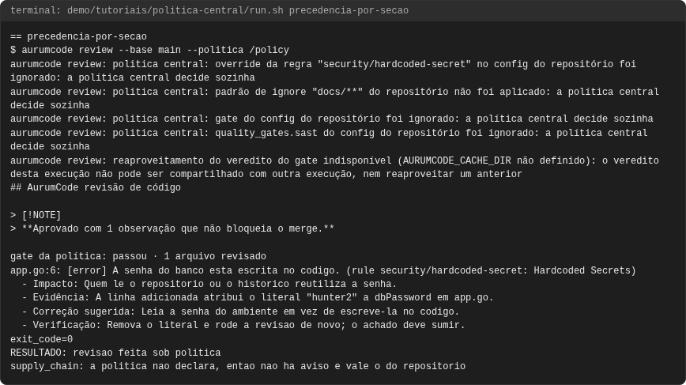
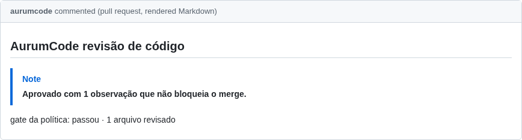
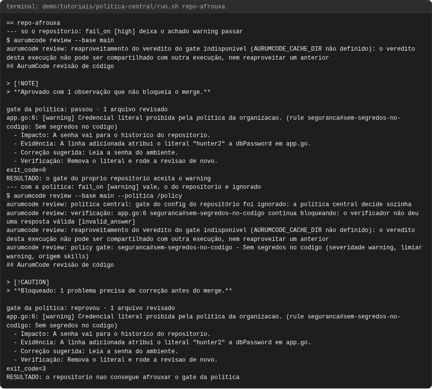

Tutorial: política central
Objetivo
Mostrar como uma organização impõe revisão e gate a todos os repositórios
a partir de um só lugar, sem que um repositório consiga afrouxar. Cinco usos,
todos executados: o repositório de política com --politica, o
policy_repository no workflow, a precedência seção a seção (algumas
seções a política governa sempre; outras, só quando as declara), o
analysis_data, e um repositório que tenta afrouxar o fail_on e não
consegue.
Os blocos de configuração são os arquivos de
demo/tutoriais/politica-central/, byte a byte, e as saídas vêm de uma
execução real registrada em demo/tutoriais/politica-central/out/
(run.sh --check e tests/acceptance/AUR-561.sh conferem).
Pré-requisitos
git,docker,bashe a imagem do produto, como em revisao.md. Nenhuma credencial: o modelo é um JSON determinístico (AURUMCODE_LLM_FIXTURE) e os containers rodam sem rede. Para repetir um caso à mão, use o atalho de revisao.md comTUTORIAL_DIR=/caminho/para/AurumCode/demo/tutoriais/politica-central(montado em/fixtures), acrescente ao atalho a pasta da política (-v "/caminho/da/politica:/policy:ro") e exporteAURUMCODE_LLM_FIXTURE=/fixtures/fixture-politica.json.- Ler skills.md: as seções das skills da política são as regras que o gate cobra.
bash demo/tutoriais/politica-central/run.sh all # executa os seis casos e grava out/
bash demo/tutoriais/politica-central/run.sh --check # compara out/ com expected/, sem docker
O que é uma política central
Um diretório (tipicamente o checkout de um repositório da organização, como
ORG/aurumcode-policy) que contém .aurumcode/config.yml e os Markdown
que ele lista. Não é o .aurumcode/ em si, é o diretório pai. Ele precisa ficar
fora da árvore revisada: o programa recusa uma política que resolva para
dentro do repositório sob revisão.
Caso 1: o repositório de política e --politica
Esta é a política do tutorial: um gate que reprova a partir de warning, que
bloqueia o que for inconclusivo, o idioma e uma skill:
gate:
fail_on: [warning]
inconclusive: block
review:
language: pt-BR
context:
skills:
- skills/seguranca.md
# Seguranca da organizacao
## Sem segredos no codigo
Nenhum segredo literal e aceito em nenhum repositorio da organizacao.
O repositório do time não tem configuração nenhuma. Rodando a mesma
mudança sem e com a política (--politica, alias --policy; sem a flag, a
variável AURUMCODE_POLICY):
aurumcode review --base main
aurumcode review --base main --politica /caminho/da/politica
aurumcode review: 1 finding(s) discarded: 1 citing an unknown rule_id (seguranca#sem-segredos-no-codigo)
exit_code=0
RESULTADO: sem politica nao ha gate
$ aurumcode review --base main --politica /policy
> **Gate passed: no problem proven in the reviewed change.**
app.go:6: [warning] Credencial literal proibida pela politica da organizacao. (rule seguranca#sem-segredos-no-codigo: Sem segredos no codigo)
aurumcode review: policy gate: seguranca#sem-segredos-no-codigo - Sem segredos no codigo (severidade warning, limiar warning, origem skills)
exit_code=3
RESULTADO: a politica reprova o achado que cita a skill dela
O que observar: sem a política o id seguranca#... nem existe (o achado é
descartado e contado) e nada reprova; com ela, a skill da política entra, o
parecer vem em português (idioma da política) e o gate nomeia a skill e a seção
que sustentam o bloqueio, com saída 3. (No script o diretório de política é
montado em /policy, fora do repositório em /work.)
Caso 2: policy_repository no workflow
No GitHub não se passa um caminho: o workflow reutilizável recebe o repositório
da política e faz ele mesmo o checkout, somente leitura e sem persistir
credenciais, em .aurumcode-policy, e chama o programa com --politica. Fixe
o policy_ref em SHA, para que toda PR da organização seja julgada pela
mesma política até alguém apontar deliberadamente para outra:
# Workflow obrigatorio da organizacao, com a politica central embutida.
# ORG, o SHA do AurumCode e o SHA da politica sao placeholders: troque pelos seus.
name: Revisao obrigatoria AurumCode
on:
pull_request:
permissions:
contents: read
pull-requests: write
statuses: write
checks: read
jobs:
review:
uses: ORG/AurumCode/.github/workflows/review.yml@0000000000000000000000000000000000000000
with:
policy_repository: ORG/aurumcode-policy
policy_ref: 1111111111111111111111111111111111111111
security: true
secrets:
LLM_API_KEY: ${{ secrets.LLM_API_KEY }}
LLM_BASE_URL: ${{ secrets.LLM_BASE_URL }}
Não existe um input policy_path no reutilizável: num job workflow_call os
únicos diretórios alcançáveis são o checkout da ferramenta e o do PR, então
aceitar "um caminho que já existe" deixaria o próprio PR apontar para a sua
política. (A Action Docker direta, action.yml, tem policy_path, porque ali
quem escreve os steps controla o que foi checado; a política vai para
$RUNNER_TEMP/_github_home e policy_path aponta para /github/home/<dir>,
já que tudo em /github/workspace é a árvore revisada e é recusado.)
O que observar, e o que isto prova: não há runner do GitHub nesta demonstração: a fase
policy-repository não executa a revisão de PR. Ela confere, contra o
review.yml real do repositório, que cada input do arquivo acima existe, que o
reutilizável faz o checkout em .aurumcode-policy sem persistir credenciais e
passa --politica, e que policy_path não existe lá. O comportamento da
política em si é o do caso 1, que usa a mesma flag.
Estas linhas são conclusão do script (não é saída do produto): cada uma é
impressa quando o grep do run.sh encontra o trecho correspondente em
review.yml ou em workflow-organizacao.yml (para policy_path, quando
ele não existe como input).
input policy_repository: existe em review.yml
input policy_ref: existe em review.yml
policy_ref: SHA fixa, nao um branch
review.yml nao tem input policy_path: so policy_repository pode declarar a politica
review.yml: faz o checkout de policy_repository
review.yml: o checkout vai para .aurumcode-policy
review.yml: checkout sem persistir credenciais
review.yml: passa --politica /github/policy ao aurumcode
Caso 3: precedência por seção
rules, ignore, gate e exceptions a política governa sempre; as
outras seções, só quando as declara. Esta política declara gate e
quality_gates.sast:
gate:
fail_on: [warning]
inconclusive: block
quality_gates:
sast:
engine: semgrep
enabled: false
review:
language: pt-BR
O repositório tenta decidir tudo por conta própria:
gate:
fail_on: [high]
inconclusive: warn
quality_gates:
sast:
engine: semgrep
enabled: true
supply_chain:
engine: cosign
sign_sbom: false
rules:
security/hardcoded-secret:
enabled: false
ignore:
- "docs/**"
review:
language: pt-BR
aurumcode review: politica central: override da regra "security/hardcoded-secret" no config do repositório foi ignorado: a política central decide sozinha
aurumcode review: politica central: padrão de ignore "docs/**" do repositório não foi aplicado: a política central decide sozinha
aurumcode review: politica central: gate do config do repositório foi ignorado: a política central decide sozinha
aurumcode review: politica central: quality_gates.sast do config do repositório foi ignorado: a política central decide sozinha
supply_chain: a politica nao declara, entao nao ha aviso e vale o do repositorio
A última linha é conclusão do script (não é saída do produto): é impressa
quando a palavra supply_chain não aparece na saída do comando. Que "vale o
do repositório" vem da referência de configuração; aqui só a ausência do aviso
foi demonstrada.
O que observar, seção por seção:
| Seção | Sob política central, quem decide | Resultado |
|---|---|---|
rules, ignore, gate, exceptions |
sempre a política, declare ou não | o do repositório é ignorado, com aviso que nomeia a regra, o padrão ou a seção |
quality_gates.sast |
a política, quando declara | vale como engine semgrep obrigatória: o semgrep do repositório é ignorado, com aviso (neste caso) |
quality_gates.scanners |
engine por engine | entrada da política com required: true vence: o repositório não a troca nem a desliga; sem required: true, vale a do repositório, com aviso; engine que só um lado declara vale como declarada |
quality_gates.ssor_dtrack, quality_gates.supply_chain |
a política, quando declara | declarada na política, a do repositório é ignorada, com aviso; não declarada (como supply_chain neste caso), vale a do repositório, sem aviso |
analysis_data, deliberation, batches, changelog_check, dependencies |
a política, quando declara | se a política declara, decide sozinha e a do repositório é ignorada, com aviso; se não declara, vale a do repositório |
review.language, review.publication |
a política, quando declara | vêm da política quando declarados |
review.profiles, review.verification, review.memory, review.inline_comments, review.presentation, review.changelog, review.version |
nunca a política | sempre do repositório |
review.context |
os dois | o contexto do repositório continua, e o da política (skills, prompt, documentos) entra como camada da política |
Cada seção de quality_gates é governada de forma independente: o aviso
existe para o que foi descartado, e a ausência dele em supply_chain é a
prova de que nada foi descartado ali. Os mesmos avisos vão para o terminal e
para o parecer publicado no PR.
Caso 4: analysis_data
analysis_data segue a mesma regra de quality_gates. Aqui a política o
declara e o repositório também:
gate:
fail_on: [warning]
inconclusive: warn
analysis_data:
max_age_days: 30
review:
language: pt-BR
aurumcode review: politica central: analysis_data do config do repositório foi ignorado: a política central decide sozinha
aurumcode review: policy gate: analysis_data: revisão inconclusiva (dados de análise indisponíveis [analysis_data_unavailable])
exit_code=0
O que observar: o analysis_data do repositório foi ignorado com aviso. E,
como a demonstração roda sem rede, o artefato de dados não pôde ser obtido:
o resultado é inconclusivo (analysis_data_unavailable), nunca aprovado.
Com inconclusive: warn a saída é 0, com o alerta visível; com block, como
na política do caso 1, ele reprovaria. O texto de rede do erro varia por
ambiente e é omitido do registro (o filtro está em run.sh).
Caso 5: o repositório tenta afrouxar o fail_on e não consegue
O repositório do time declara um gate mais frouxo e uma skill com a mesma seção da política:
review:
language: pt-BR
context:
skills:
- .aurumcode/skills/seguranca.md
gate:
fail_on: [high]
inconclusive: warn
O achado é um warning que cita seguranca#sem-segredos-no-codigo. Primeiro só
com o repositório, depois com a política:
exit_code=0
RESULTADO: o gate do proprio repositorio aceita o warning
aurumcode review: politica central: gate do config do repositório foi ignorado: a política central decide sozinha
aurumcode review: policy gate: seguranca#sem-segredos-no-codigo - Sem segredos no codigo (severidade warning, limiar warning, origem skills)
exit_code=3
RESULTADO: o repositorio nao consegue afrouxar o gate da politica
(RESULTADO: é conclusão do script, não saída do produto: vale quando o
exit_code é o esperado, 0 e 3.)
O que observar: sozinho, o repositório se deixa passar (fail_on: [high]
ignora um warning). Sob política, o gate dele é descartado com aviso e vale
fail_on: [warning]: saída 3. Para destravar, quem tem de mudar é a política,
por um PR no repositório dela.
Quando falha: política inválida
Uma política com chave desconhecida (aqui um erro de digitação,
inconclusve) não é ignorada nem aplicada pela metade:
gate:
fail_on: [warning]
inconclusve: block
review:
language: pt-BR
aurumcode review: central policy: parsing /policy/.aurumcode/config.yml: yaml: unmarshal errors:
line 3: field inconclusve not found in type config.GateConfig
exit_code=1
RESULTADO: politica invalida falha antes de qualquer chamada ao modelo
É erro de carga: saída 1, antes de qualquer chamada ao modelo, e o erro nomeia
o arquivo, a linha e a chave. O mesmo vale para YAML inválido, config.yml
ausente, skill listada que não existe (veja skills.md) ou um
diretório de política dentro da árvore revisada. Uma política quebrada
bloqueia em vez de liberar em silêncio.
Problemas comuns
- "a política central decide sozinha" num aviso: não é erro. Quer dizer que o repositório declarou algo que a política já governa; o do repositório foi descartado. Para mudar o comportamento, mude a política.
- A política não surtiu efeito: confira que
--politicaaponta para o diretório que contém.aurumcode/, e não para.aurumcode/. - Política recusada por estar dentro do repositório: o diretório de política
tem de estar fora da árvore revisada (no workflow,
policy_repositorycuida disso). - O gate não pega meu achado: só contam achados cuja regra é de skill da
política, do catálogo determinístico (
analysis/*) ou do SAST, que passaram pelo gate de evidência; vejagate.sourcesem configuration.md. policy_refcom branch: use SHA; um branch muda o gate de todos os repositórios sem revisão própria.- Inconclusivo:
gate.inconclusive: blockreprova,warnsó alerta; em nenhum dos dois o parecer aparece como aprovado.
Como fica
Capturas geradas por scripts/docs/capturas.sh a partir das saídas gravadas em demo/tutoriais/politica-central/out/: o terminal de cada caso e, quando o caso publica, o comentario do PR e os status checks. O manifesto docs/assets/capturas/capturas.json registra o digest de cada insumo.
analysis-data


falha-politica-invalida

policy-repository

politica-local


precedencia-por-secao


repo-afrouxa
